EDUC_806- Quantitative Research Methods
Chapter 1- Introduction to SPSS for Quantitative Research
Welcome to the lab section of EDUC 806. This section will focus (primarily) on demonstrating how to use “SPSS” for statistical analysis. This website will be updated as the course progresses. I’m passionate about open science and reproducibility- so my goal is to make this website readily available for anyone and methods covered reproducible as much as possible. As such, all the links to download any open data will be embedded in the website (so you can just click it and download as needed).
Learning Objectives for this Chapter
For this lab, we will get familiar with the SPSS software layout, and do basic descriptive statistics of some sample data to make sense of it. Specifically, we will be doing the following:
Opening SPSS and the SPSS layout- become familiar with the SPSS environment
Learn how to prepare and manage data in SPSS- reviewing data view and the Variable View tab
Learn how to perform descriptive statistics using SPSS- opening a sample data and producing different graphs
Software for Statistical Analysis
There are several software available for statistical analysis. For this course, we will be using SPSS throughout the semester. However, anyone interested in using R (or Python) should feel free to do so (and I’m happy to chat about that). If you’re generally interested in using R for statistical analysis and would like a quick intro, please refer to this website R Workshop for Statistical Analysis.
R
SPSSPython
STATA
SAS
Julia
| SPSS | STATA | SAS | R/R-Studio | Python | Julia | |
|---|---|---|---|---|---|---|
| Price | Free trial (paid subscription/license) | Free trial (paid subscription/license) | Free trial (paid subscription/license) | FREE, Open-Source (non-commercial) | FREE, Open-Source | Open-Source |
| Interface | Click, Drag and Drop + Syntax | Drag and Drop, Scripts, User-friendly | User-friendly | User-friendly | User-friendly | User-friendly |
| Data Visualization | Basic plots, charts, graphs | Plots, charts, graphs | Simple and complex plots | Plots, Graphs- simple, complex- GGplot | Plots, Graphs | Plots, Graphs |
| Statistical models | A lot of statistical models | Very good | Very good | Common and complex (including integration of STAN for Bayesian Analysis) | Common and Complex (including running different ML algorithms) | Common and complex- also very fast |
| Help forum | Google, Stack overflow | Google, Stack Overflow | Google, Stack Overflow | Google, Stack Overflow, Github | Google, Stack Overflow, Github | Google, Stack Overflow, Github |
SPSS Interface
Technically, SPSS interface is composed of 3 main windows:
- Data Editor
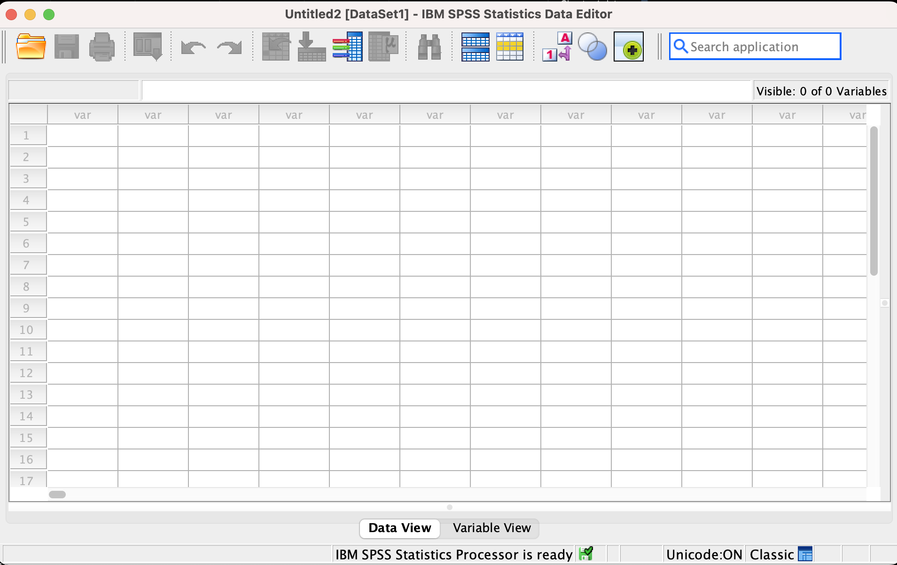
- Output

- Syntax
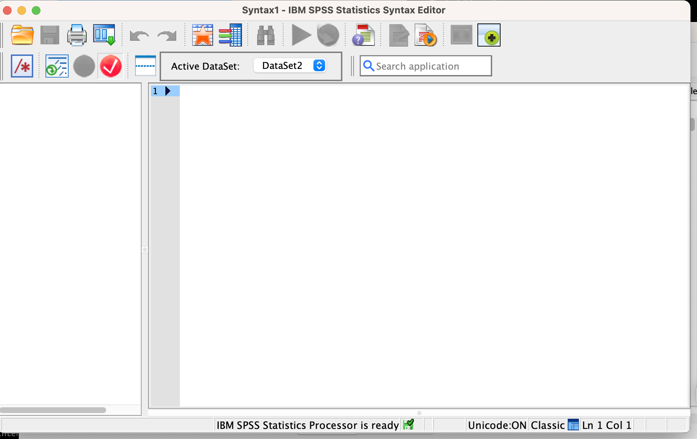
Data Import/Entry and Preparation in SPSS
There are a couple different ways to load in data in SPSS.
- Directly enter the data in the “data” view of SPSS. Variable name in columns and observations in rows and values in between. However, this can be time consuming especially when working with large dataset or if you already have them in different file formats (e.g. csv).
- Click on the “File” menu of SPSS, scroll down to “import’ and select the file format you’d like to choose.
- If you have the data saved somewhere, or want to open data in “SPSS .sav format”, you can click on “File”, select the “Open”, and then “Data.”
Once you’ve loaded the data, the next thing is to check the information of variables. This can be achieved by clicking on the “variable view” beside the “data view” (in the main SPSS window). Technically, the data view shows the full data you just loaded and the variable view represents the additional (important) information of the loaded data. On this variable view screen, you can give the name to the variable and define properties. For example, you can decide to code the “missing data” as “999” here, set the “measure” as (nominal, ordinal, or scale), code categorical data as 0 and 1 (as needed), etc.
Data Management
In SPSS, you can process and make modifications to your raw data, including changing string to numeric data, computing a new variable, and merging multiple categories among others.
There are two important functions that can be used for data management in SPSS.
Transform & Recode function - this can be used to recode data into different variables.

Compute Function- to compute a new summary variable. To do this, click on “transform”, then “compute variable’.
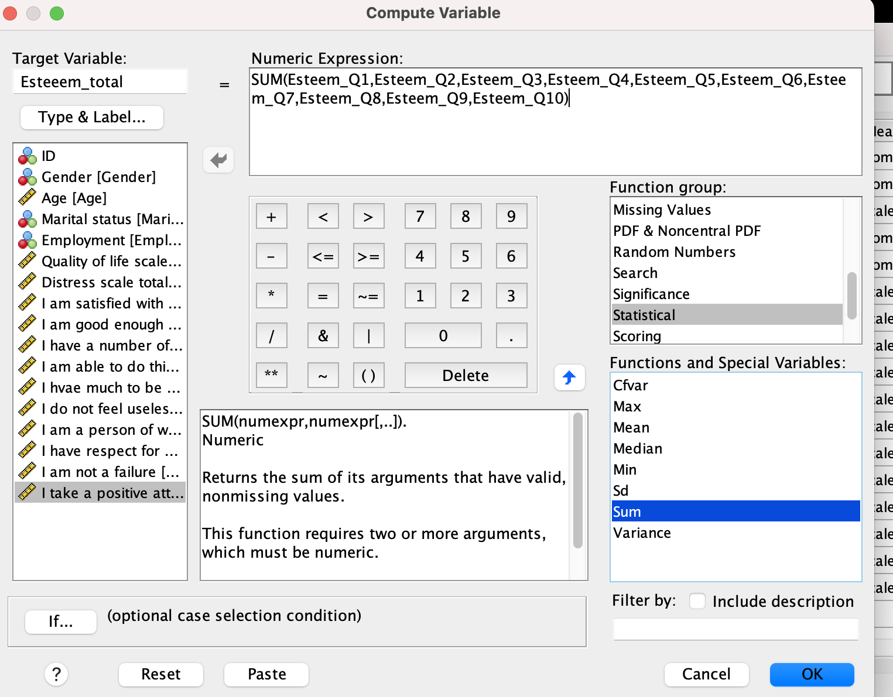
Descriptive Statistics
Descriptive statistics provide a description, summary and show meaningful patterns in data using measure of central tendency and measure of dispersion (spread). The measure of central tendency include mean, median, mode and measure of dispersion include, standard deviation, variance, range, minimum and maximum statistic (which describe how the data is dispersed/spread).
Note- we may not use range and min/max at the same time, same way we may not use Variance at the same time we use SD. This is because one is derivative of other. Put simply,
Range = max - min
Standard Deviation = \(\sqrt{variance}\)
Importance of Descriptive Statistics,
- Data exploration
- Give general sample description
- See if data are loaded correctly
As part of descriptive stat, it is equally important to examine the distribution of data - that is whether the data is normally (or not) distributed. This can be checked by plotting the data and or through a calculation of skewness and kurtosis.
In SPSS, there are two ways to perform descriptive stat- frequencies and descriptive (which usually produces the same result).
Let’s see how it’s done in SPSS.
For the purpose of this lab, we shall be using this example data which can be downloaded here. This dataset contains demographic information of random participants and the quality of life. No identity is revealed and the data can be freely used.
Suppose we’re interested in calculating the measures of central tendency (mean, median, and mode) as well as dispersion/spread (standard deviation, variance, and range). First, download the dataset in the link above (“Example_data_Lab1.sav or xlsx). Load the downloaded data into the SPSS spreadsheet (you’d see something like below):
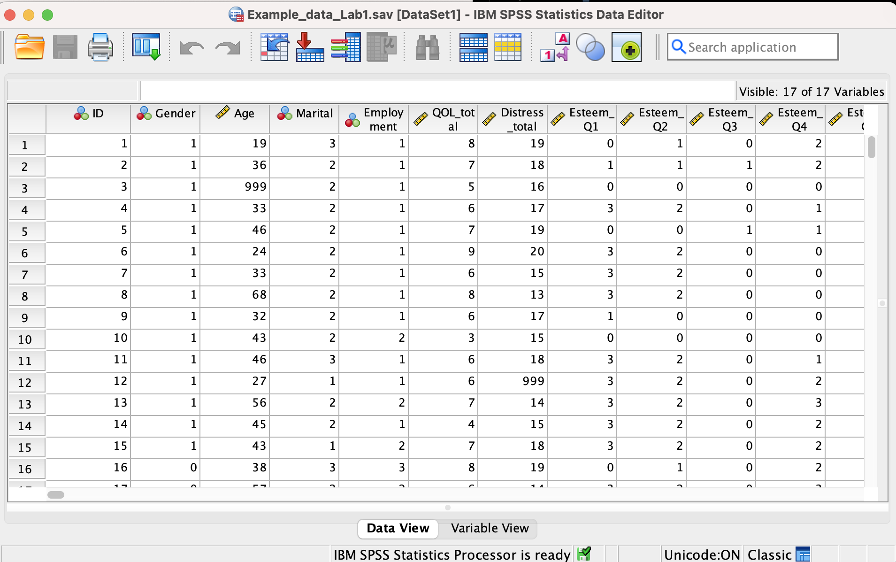
Now, let’s calculate descriptive statistics,
From the default view, go to the top menu and selecta Analyze, then Descriptive Statistics and then Frequencies:
A new window will pop up and ask you to specify for which variables you’d like to calculate descriptive statistics. Use the arrow to move the Age variable from the left-hand to the right-hand field (as seen here).
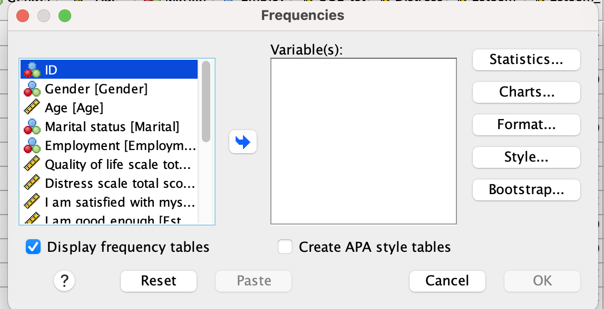
Now, click the Statistics button. This will open a new window containing a list of statistics. Select mean. median. mode, range and standard deviation (of course, you can select as many as you want to be calculated). Also, select skewness and kurtosis (to check normality assumption).
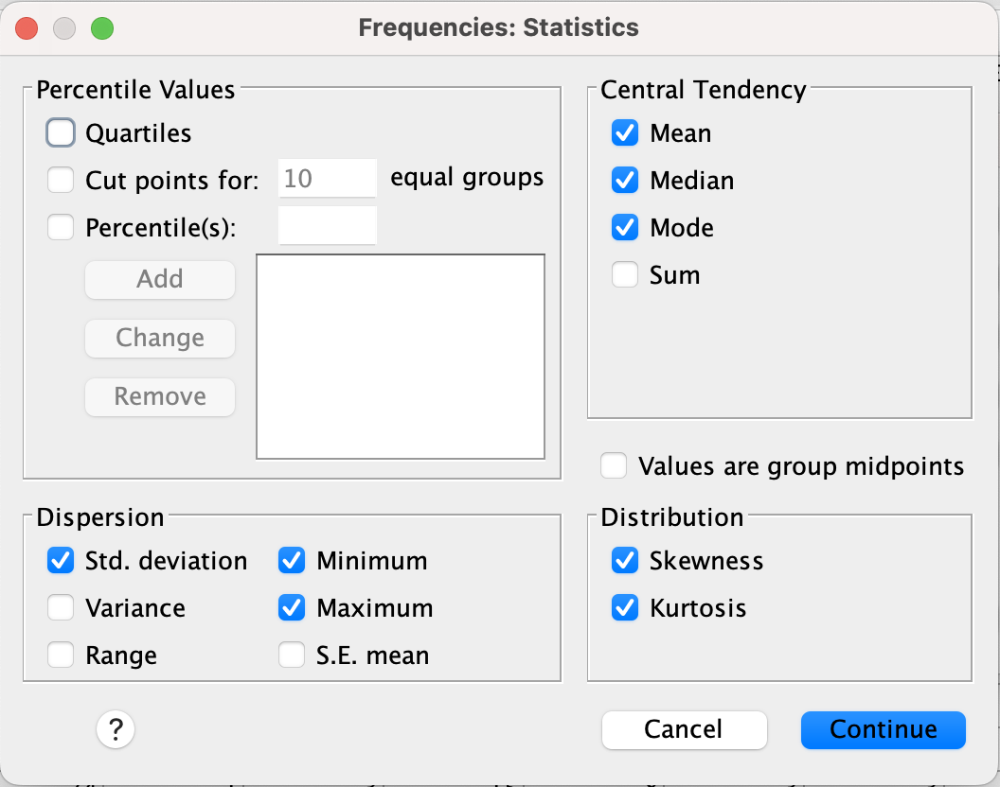
Click Continue, and then OK. SPSS will produce the output table(s) containing the descriptive statistics we have chosen. If you calculate the frequency table, it will also include a frequency table–a list of all the possible values in the data set and their corresponding frequencies.
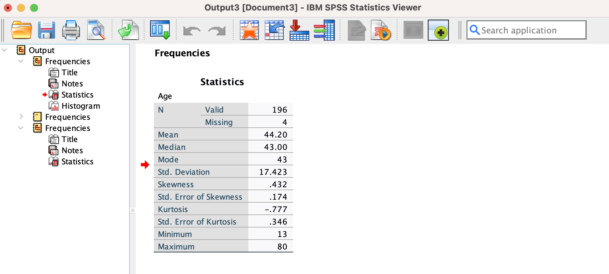
Task one
Remember I said there are two ways to perform descriptive statistics in SPSS. I have shown the “frequencies” route. Now, perform descriptive statistics using the “descriptives” route. (hint- follow the same description above but instead of choosing the frequencies, select descriptives and do the same thing again).
Descriptive Statistics and Histograms
Here, we will continue with our measure of central tendency and dispersion as in the example above, but with the addition of a histogram to viisualize the distribution of our data (in relation to the chosen descriptive statistics).
Imagine we wanted to know about quality of life across our respondents in the questionnaire, we can achieve this by calculating descriptive statistics, as well as plotting a histogram to examine the distribution of the data. Good thing is that SPSS has neat ways to plot data while calculating different measure of central tendency or dispersion. For instance, we can expand the example above by add the “histogram” plot to the output without using the graphs menu in SPSS (much easier)! Using the same dataset as above, we can calculate the descriptive statistics of quality of life.
Like we did the other time, navigate to Analyze, then Descriptive Statistics, and then Frequencies. Select and drag the “quality of life”, and then move it into the field (“variable”) on the right using the arrow.
Like in the last example, click the Statistics button and choose your measures of central tendency (mean, median, mode) and dispersion/spread (range, standard deviation, variance).
Click continue, then we are back to the other window. Now before you proceed, ask SPSS to insert a histogram by clicking on the Charts button, then “histogram” (and check off Show normal curve on histogram):
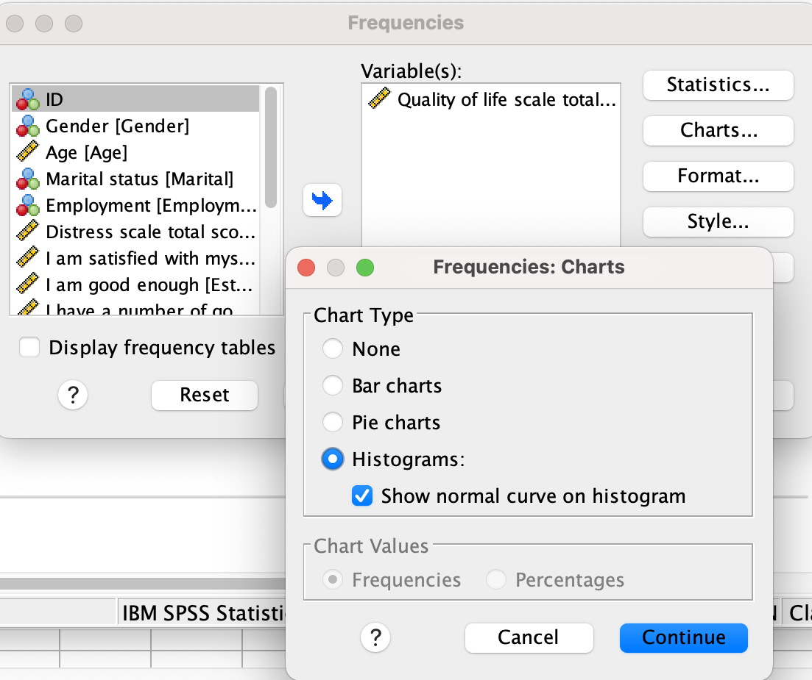
Finally, you can click continue, and then OK.
With this, SPSS will generate a table of the chosen descriptive statistics, and a histogram showing the distribution of quality of life with a superimposed normal distribution (for comparison):
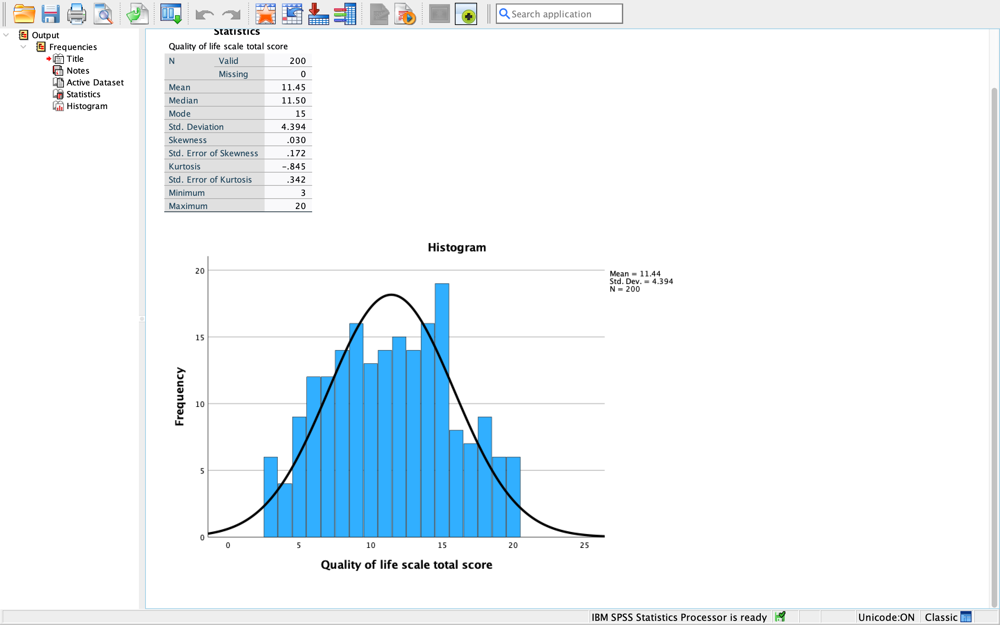
From this result, we can easily see pattern of the data. The data contains minimum value of 3 and maximum of 20. The mean quality of life (QOL) is 11.45. Thus, we can say the central tendency of this distribution seems to be a good representation as the mean value is not so far from minimum and maximum value. It is however necessary to be sure the data doesn’t contain outliers as mean statistic is sensitive to outliers. In other words, to have good representation (average) in frequency distribution, your data must be controlled from outliers. Median (middle term in a data arranged in order of magnitude) is another commonly used statistic that is less affected by outliers and skewed data. From the result above, the median QOL is 11.50. This value is close to the mean which denote a possiblity of symmetrical distribution. It is also worth noting that median is mostly applicable to ordinal data set and skewed scale variable and may not be a reliable measure of central position if otherwise. Mode is the most frequent score in a data set and often the highest bar in histogram. From the result above, the quality of life with highest frequency is 15. However, mode may not also be a reliable measure of central position of this data as its applicable to categorical or nominal data set. Looking at the table, we can see that the values of mean, median and mode are very close and implies that the distribution is (almost) symmetrical.
Standard deviation (SD) measures the spread of the data. The larger the value of SD, the more spread out the observations are. The SD of QOL is 4.394- which implies the QOL measurements are spread out relatively far from their mean position. Skewness represent how a variable is normally distributed around the mean position. Skeweness of 0 = normal (symmetrical) distribution. Value of skewenss close to 0 = near symmetrical. Less than 0 = negative skeweness. greater than 0 = positive skeweness. Looking at the table, the skewenss of QOL = 0.030 (skewness close to 0- near symmetrical). We can also check the histogram to confirm this. Note that, If the plot was perfectly symmetrical, the value of mean, median and mode should be exactly same thing.
Lastly, Kurtosis measures the heaviness of the tail of distribution. A normal distribution = 0 kurtosis. Kurtosis is positive if the tails are heavier than for a normal distribution and negative if lighter. From the result above, kurtosis = -0.845 for QOL (which indicates a nearly normally distribution since they’re close to 0). However, since Kurtosis is negative here, it means that there are less data distribution at the tails- which means the data are centered around the mean position.
Plot Edits/Customization
Assuming you want to modify the scale of the plot output, you should double-click on the plot in the output window. Then, a Chart Editor should pop up:
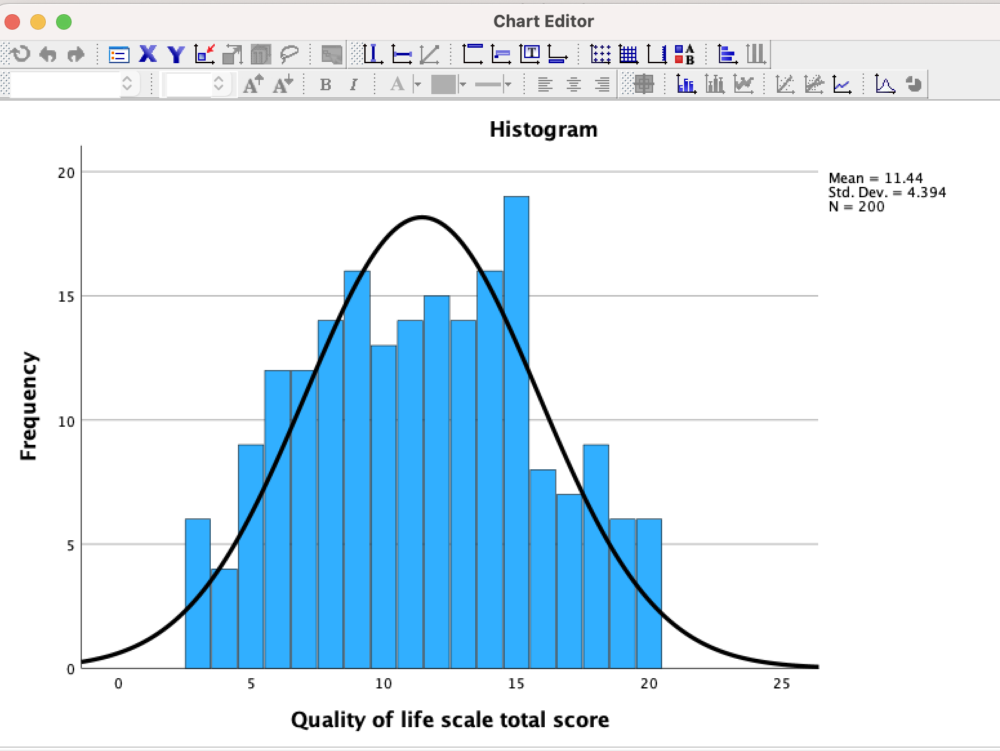
Next is to hover your mouse over one of the values on the x-axis, and click one any. All of the x-axis values will become highlighted:
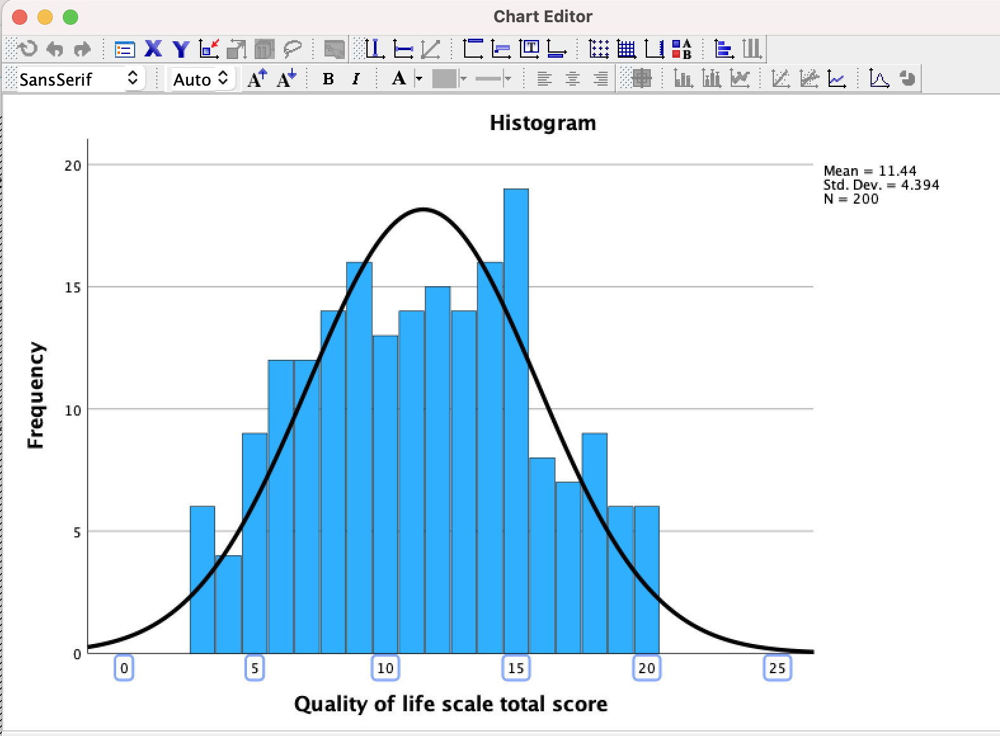
From there, double click on the x-axis and a properties window should pop up:
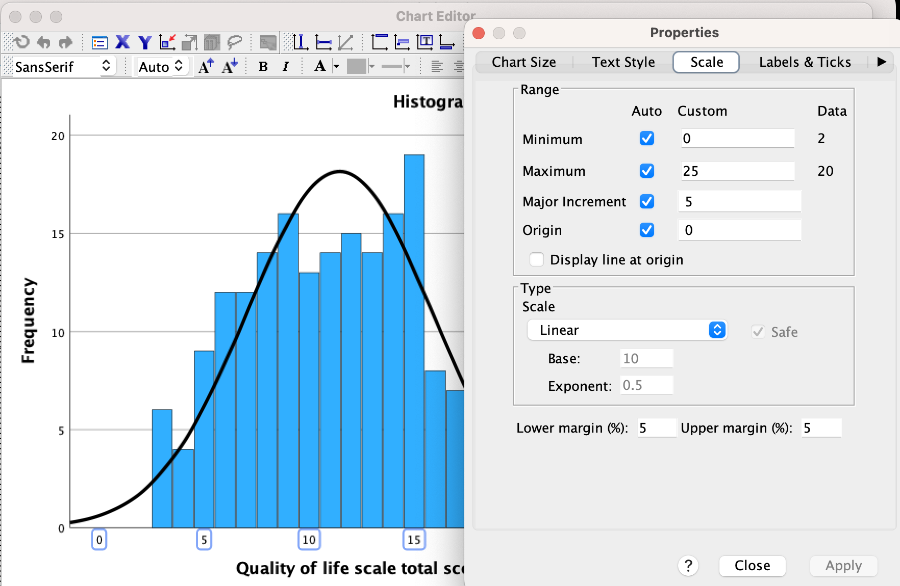
From there, you can click on the “scale”, modify and apply it. Close the box and your adjustment will be reflected on the main plot.
Practice Questions
Using the world happiness report data set, perform a descriptive statistics of Healthy life expectancy at birth. You can download the data here. The descriptive statistics should include measures of central tendency and dispersion/spread.
Plot histograms of Healthy life expectancy at birth . Looking at the mean, median, and mode, what do they indicate about the shape of the distribution? Can you verify that by looking at the histogram? How does the shape of this distribution compare to the normal (Gaussian) distribution superimposed over it?